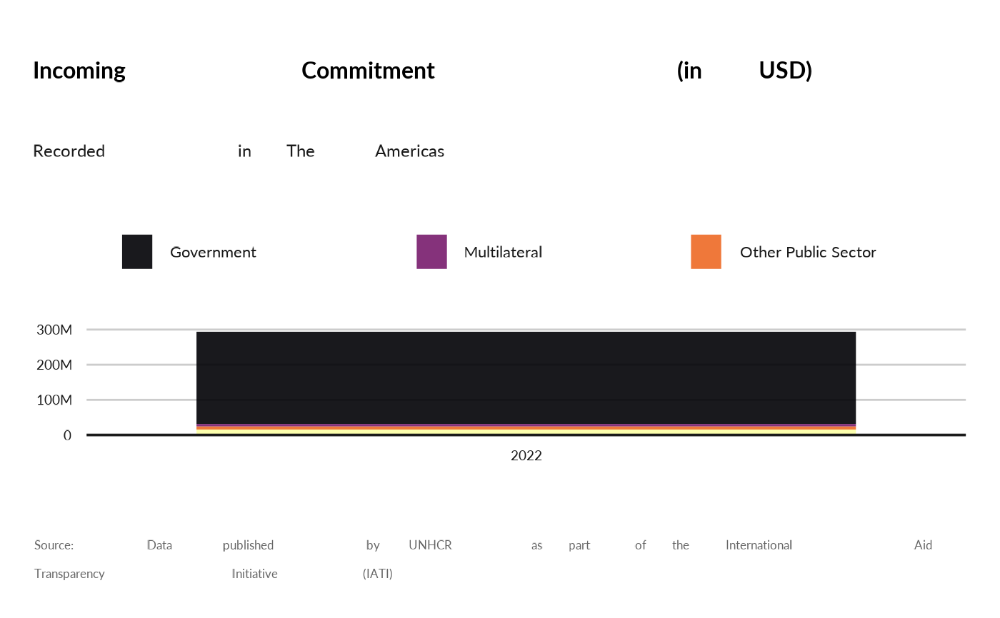
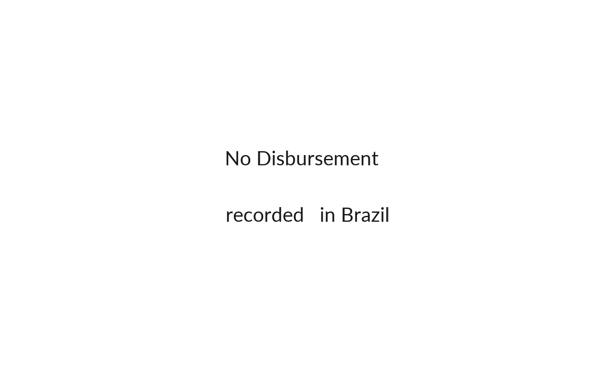
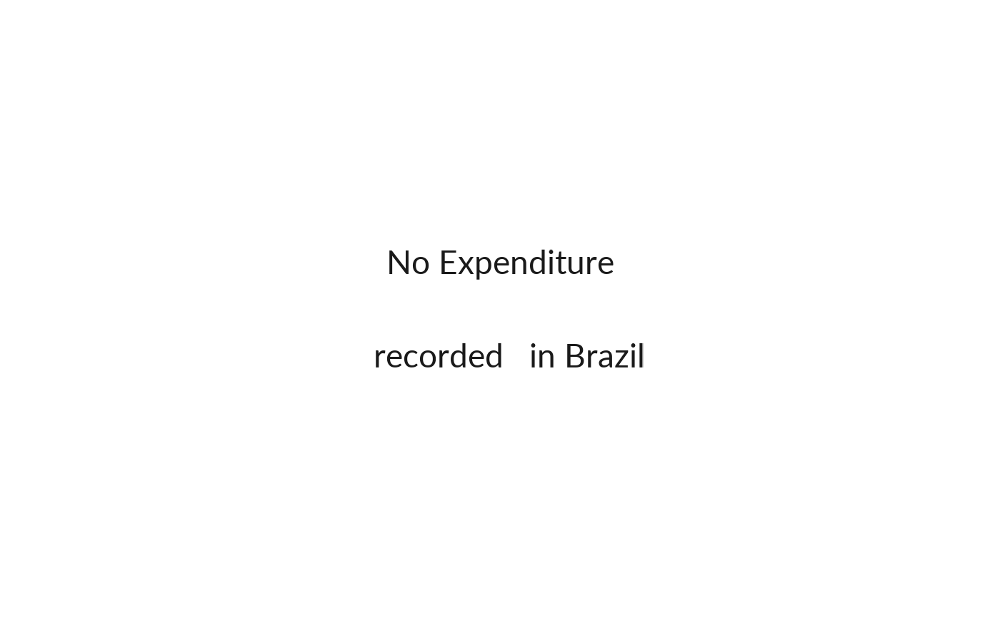

Who are the main donors by country in terms of number of projects and/or total budget?
Usage
show_donors(
year,
programme_lab = NULL,
iati_identifier_ops = NULL,
ctr_name = NULL,
transaction_type_name = "Incoming Commitment"
)Arguments
- year
year to select starting from 2016 - could be one year or a list
- programme_lab
A character vector corresponding to the name of the programme.
- iati_identifier_ops
A character vector corresponding to the name of the operation.
- ctr_name
A character vector corresponding to the name of the country.
- transaction_type_name
Transaction type - default is "Incoming Commitment" , can also be "Disbursement", or "Expenditure"
Examples
knitr::kable( codeTransactionType |> dplyr::select(name, description) )
#>
#>
#> |name |description |
#> |:-------------------|:-------------------------------------------------------------------------------------------------------------------------------------------------------------------------------------------|
#> |Incoming Funds |Funds recieved for use on the activity, which can be from an external or internal source. |
#> |Outgoing Commitment |A firm, written obligation from a donor or provider to provide a specified amount of funds, under particular terms and conditions, for specific purposes, for the benefit of the recipient. |
#> |Disbursement |Outgoing funds that are placed at the disposal of a recipient government or organisation, or funds transferred between two separately reported activities. |
#> |Expenditure |Outgoing funds that are spent on goods and services for the activity. |
#> |Interest Payment |The actual amount of interest paid on a loan or line of credit, including fees. |
#> |Loan Repayment |The actual amount of principal (amortisation) repaid, including any arrears. |
#> |Reimbursement |A type of disbursement that covers funds that have already been spent by the recipient, as agreed in the terms of the grant or loan |
#> |Purchase of Equity |Outgoing funds that are used to purchase equity in a business |
#> |Sale of Equity |Incoming funds from the sale of equity. |
#> |Credit Guarantee |A commitment made by a funding organisation to underwrite a loan or line of credit entered into by a third party. |
#> |Incoming Commitment |A firm, written obligation from a donor or provider to provide a specified amount of funds, under particular terms and conditions, reported by a recipient for this activity. |
#> |Outgoing Pledge |Indicative, non-binding advice of an intended outgoing commitment. |
#> |Incoming Pledge |Indicative, non-binding advice of an intended incoming commitment. |
show_donors(year = 2018,
programme_lab = "The Americas",
transaction_type_name = "Incoming Commitment" )

show_donors(year = 2018,
ctr_name = "Brazil",
transaction_type_name = "Incoming Commitment" )
show_donors(year = 2018,
programme_lab = "The Americas",
transaction_type_name = "Disbursement" )

show_donors(year = 2018,
programme_lab = "The Americas",
transaction_type_name = "Expenditure" )
